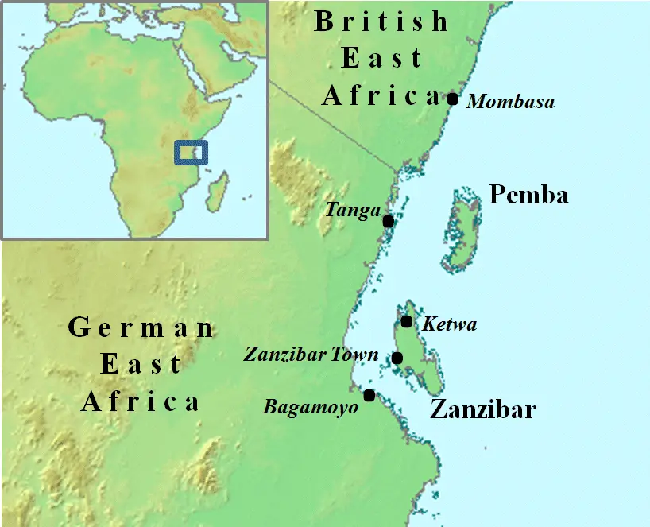
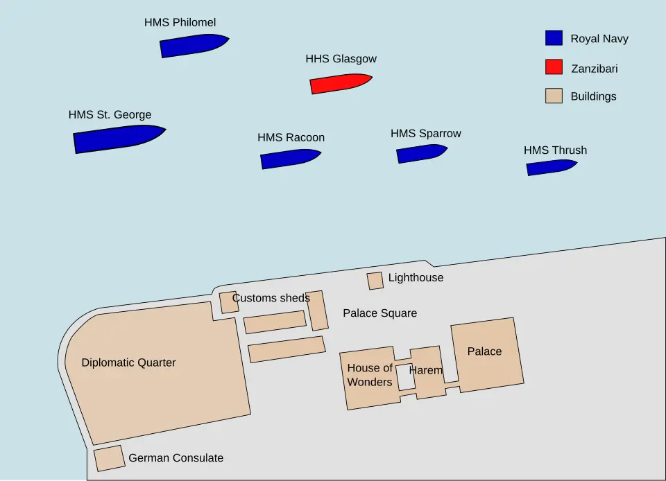
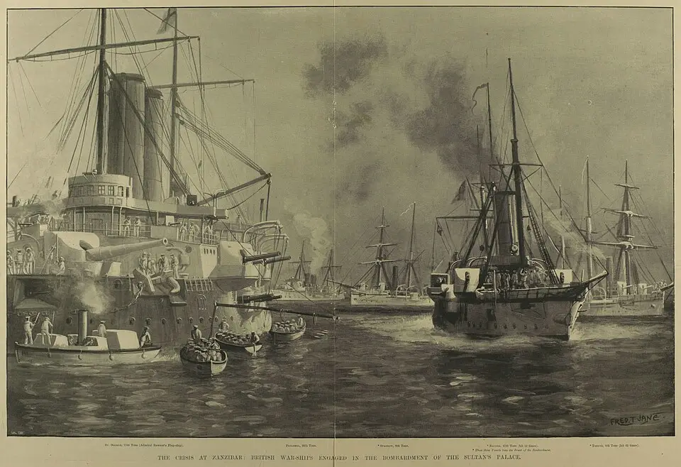
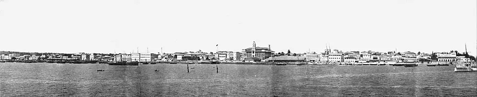

Cuộc chiến ngắn nhất lịch sử kéo dài chưa đầy một giờ
Lúc 9 giờ 2 phút sáng 27/8/1896, ba tàu chiến Anh khai hỏa vào cung điện Zanzibar. Khoảng 38 phút sau, lá cờ đỏ trên cung điện bị bắn rơi.

Đêm 26/8/1896, lãnh sự Mỹ ở Zanzibar, Richard Dorsey Mohun, ghi lại rằng thành phố im lặng đến đáng sợ: thường ngày có tiếng trống, tiếng trẻ con khóc, nhưng đêm ấy không có một tiếng động nào. Trong cảng lúc ấy đã có hai tuần dương hạm và ba pháo hạm của Anh. Cuộc chiến diễn ra sau đó được coi là ngắn nhất trong lịch sử có ghi chép, ngắn đến mức người ta vẫn còn tranh luận nên bấm giờ từ phút nào.
Hải quân Zanzibar chỉ có một chiếc tàu gỗ, du thuyền hoàng gia HHS Glasgow.
Một cái chết đột ngột
Zanzibar là một quốc gia hải đảo ngoài khơi Đông Phi, nay thuộc Tanzania. Từ năm 1890, đảo là xứ bảo hộ của Anh, và theo hiệp ước, người muốn lên ngôi quốc vương phải được lãnh sự Anh đồng ý.
Lúc 11 giờ 40 sáng 25/8/1896, quốc vương Hamad bin Thuwaini, người thân Anh, đột ngột qua đời. Người cháu là Khalid bin Barghash, bị một số người nghi là đã ám sát chú, lập tức vào chiếm cung điện. Anh muốn đưa một ứng viên khác, Hamoud bin Muhammed. Đến cuối ngày, Khalid đã tập hợp khoảng 2.800 người, phần lớn là dân thường, cùng 700 lính askari. Pháo của ông gồm vài khẩu súng máy Maxim, một khẩu Gatling, một khẩu pháo đồng thế kỷ 17 và hai khẩu pháo 12 pound do hoàng đế Đức Wilhelm II tặng. Hải quân Zanzibar chỉ có một chiếc tàu gỗ, du thuyền hoàng gia HHS Glasgow.
Lúc 15 giờ, sau khi quốc vương cũ được chôn, súng cung điện bắn chào mừng Khalid lên ngôi. Lãnh sự Anh Basil Cave yêu cầu các lãnh sự nước ngoài treo cờ rủ để tang Hamad. Lá cờ duy nhất không rủ là lá cờ đỏ lớn trên cung điện của Khalid. Ngày hôm sau, một tuần dương hạm nữa và một bức điện của chính phủ Anh cùng tới.
Tối hậu thư


Ngày 26/8, tuần dương hạm St George chở chuẩn đô đốc Harry Rawson vào cảng. Bức điện của chính phủ Thủ tướng Salisbury cũng tới: Cave và Rawson được dùng mọi biện pháp cần thiết, nhưng không được làm việc gì mà họ không chắc sẽ thành công. Rawson ra tối hậu thư: Khalid phải hạ cờ và rời cung điện trước 9 giờ sáng 27/8.
Lúc 8 giờ 30 sáng 27/8, sứ giả của Khalid mang tới câu trả lời, theo bản ghi của phía Anh: "Chúng tôi không có ý định hạ cờ và chúng tôi không tin các ông sẽ bắn vào chúng tôi." Nửa giờ sau, câu trả lời ấy bị thử thách.
38 phút


Đúng 9 giờ, lệnh nổ súng được ban ra. Lúc 9 giờ 2 phút, ba tàu Racoon, Thrush và Sparrow cùng khai hỏa. Phát đạn đầu tiên của Thrush đã hất văng một khẩu pháo 12 pound. Cung điện phần lớn làm bằng gỗ, với khoảng 3.000 người bên trong, nhanh chóng bốc cháy. Lúc 9 giờ 5 phút, chiếc Glasgow dùng bảy khẩu pháo 9 pound và khẩu Gatling, quà của nữ hoàng Victoria, bắn vào St George. Nó bị bắn chìm ngay sau đó, nhưng cảng nông nên cột buồm vẫn nhô khỏi mặt nước. Thủy thủ trên tàu kéo cờ Anh lên để đầu hàng và được thuyền Anh vớt hết.
Khoảng 9 giờ 40, tiếng pháo dừng, lá cờ trên cung điện đã bị bắn rơi. Phía Anh đã bắn khoảng 500 quả đạn pháo, 4.100 viên đạn súng máy và 1.000 viên đạn súng trường. Khoảng 500 người Zanzibar chết hoặc bị thương, phần lớn do lửa cháy cung điện. Phía Anh có một hạ sĩ quan trên tàu Thrush bị thương nặng, về sau bình phục. Nhưng ngay cả độ dài của trận đánh cũng không ai ghi giống ai.
Bằng chứng nói gì về thời lượng


Các nguồn ghi 38, 40 hoặc 45 phút. Khác biệt nằm ở chỗ chọn mốc. Có người tính từ lệnh bắn lúc 9 giờ, có người từ phát đạn đầu lúc 9 giờ 2. Điểm kết thúc thường là 9 giờ 40, có người lấy 9 giờ 45. Ngay nhật ký các tàu Anh cũng không khớp nhau: St George ghi ngừng bắn lúc 9 giờ 35, Thrush 9 giờ 40, Racoon 9 giờ 41, Philomel và Sparrow 9 giờ 45. Con số 38 phút là con số được trích nhiều nhất. Còn Khalid, người gây ra cuộc chiến, đã kịp rời cung điện.
Bước thẳng từ vườn lên tàu
Khalid cùng khoảng 40 người chạy vào lãnh sự quán Đức. Lãnh sự Đức từ chối giao nộp, vì hiệp ước dẫn độ giữa Đức và Anh không áp dụng cho tù chính trị, và hứa sẽ đưa Khalid đi mà ông không phải đặt chân lên đất Zanzibar. Ngày 2/10, lúc thủy triều lên, một chiếc thuyền của tàu chiến Đức SMS Seeadler chèo tới tận cổng vườn lãnh sự quán. Khalid bước thẳng từ vườn xuống thuyền, rồi được đưa sang Dar es Salaam ở Đông Phi thuộc Đức. Trong Thế chiến thứ nhất, ông bị quân Anh bắt, bị đày ra Saint Helena và Seychelles, và mất ở Mombasa năm 1927.
Những người ủng hộ Khalid bị buộc phải bồi thường chi phí số đạn pháo đã bắn vào chính họ, cộng với thiệt hại do cướp bóc, tổng cộng 300.000 rupee.
Vài tháng sau, quốc vương mới Hamoud, dưới sức ép của Anh, bãi bỏ chế độ nô lệ dưới mọi hình thức. Việc giải phóng diễn ra chậm: sau mười năm, chỉ 17.293 người được tự do, trong khi năm 1891 ước tính có khoảng 60.000 nô lệ. Xác tàu Glasgow nằm trong cảng đến năm 1912 mới bị tháo làm sắt vụn. Tòa nhà Beit al-Ajaib, "Ngôi nhà Kỳ diệu", gần như không hư hại và được gắn thêm một tháp đồng hồ năm 1897. Trong 67 năm bảo hộ còn lại, không có cuộc nổi dậy nào chống Anh nữa.
Cuộc chiến ngắn đến mức các bên còn tranh cãi nó bắt đầu từ phút nào, nhưng kết quả của nó định hình Zanzibar trong hơn sáu thập kỷ sau đó.